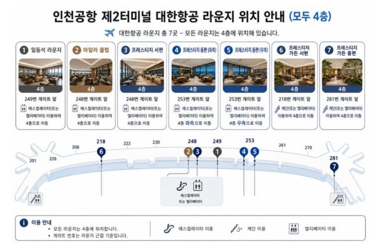

12/2(수) 가는 날, 출국 심사를 마치고 비행기 타기 전까지 쉬는 곳이에요. 4명 모두 들어갈 수 있어요.

대한항공 앱에서도 볼 수 있어요. 출국 심사 바로 앞 248·253번 쪽은 가까워서 자주 붐비고, 양 끝 가든 라운지는 조금 걸어야 하지만 대체로 한가해요.
표는 옆으로 밀어서 보세요 →
| 라운지 | 게이트 | 뷔페 | 샤워 | 라면 도서관 | 오락실 | 정원 |
|---|---|---|---|---|---|---|
| 서편 | 248 | ○ | ○ | ✕ | ✕ | ✕ |
| 동편 좌측추천 | 253 | ○ | ○ | ○ | ○ | ✕ |
| 동편 우측 | 253 | ○ | ○ | ✕ | ✕ | ✕ |
| 가든 서편 | 218 | ○ | ○ | ✕ | ✕ | ○ |
| 가든 동편 | 281 | ○ | ○ | ✕ | ✕ | ○ |
동편 좌측은 라면을 직접 끓여 먹는 라면 도서관, 쿠킹 스튜디오, 사진 부스가 있어 재미있어요. 조용히 쉬고 싶으면 나무가 많은 가든 라운지가 좋아요.
수인이가 대한항공 앱으로 미리 예약해 둘게요.
어느 곳이든 들어갈 수 있어요. 탑승구가 정해지면 가까운 곳으로 가요. 비행기는 저녁 6시 35분 출발이라 시간은 넉넉해요.
음식과 술은 무료로 마음껏 드셔도 돼요. 비행기에서도 저녁이 나오니 너무 배부르게 드시진 마세요.
창이공항 4터미널의 대한항공 라운지(블로섬 라운지)는 일등석·프레스티지 승객만 들어갈 수 있어요. 오는 편은 프리미엄석·일반석이라 이용할 수 없어요. 대신 쥬얼에서 저녁을 먹고 가요.
대한항공 공항 라운지 안내와 블로그 비교글 기준 (2026년 11월 확인). 라운지 사정에 따라 시간이 바뀔 수 있어요.